面壁三载不觉累，望穿瓶颈叹徒劳。藏徽埋刀销神箭，匹马奔雷听大潮。
前言：
一晃儿在轩辕潜水已近三年，而这三年断断续续的一直在打“炎龙骑士团外传――风之纹章”。
过程是痛苦的，结果是快乐的。
总的来说想有所突破很困难，传统思路很难达到21章前当前全员双40：14章得到第二个暗之徽章，不舍弃一个黑暗职业就不能做到14章或者更早的当前全员双40；15章收玛丽安，拿妖刀的话本章只有25回合，玛丽安到不了40转职；16～18是三连章中间不能转职，玛丽安的双40就至少到19章（实践证明还要更晚）；19章收兰斯洛特，正常的兰斯洛特只能靠物理攻击升级，19，20章电脑LV不够，兰斯洛特满级就要到21章了……
想打破“瓶颈”就要有所舍弃：比如舍弃第二个暗之徽章挑战13～14章的当前全员双40（理论上存在可能，尚未实践）；或者放弃妖刀挑战17～18章的当前全员双40（实践证明不可能）；再者就是会魔法的兰斯洛特了……
正常的兰斯洛特会在第19章第6回合出现，如果在这之前就结束战斗，将收到一个会“奔雷弹”的兰斯洛特――火种啊！！
于是20章的当前全员双40在理论上变得可能……事实上最后做到了……不过同时舍弃了妖刀。
具体原因之后再说，先说说放弃妖刀有多大的影响：
1：麻痹攻击――因为裘娜可以移动后放金刚斩，所以很少用物理攻击。――几乎没有影响。
2：每回合补充一定的MP――由于众多清道夫的存在（盖亚的轰神炮、玛丽安的流星箭），裘娜的金刚斩多用在打boss上，MP一般都够。――几乎没有影响。
3：攻击力――拿妖刀（AP+400）的裘娜攻击力排第一，拿日轮刀（AP+300）的裘娜攻击力排第二。――略有影响。
综上所述影响不大，舍就舍了吧。
俗话说：“有困难要上；没有困难制造困难也要上。”
正文前最后说说笔者制造的“困难”：
1：打最大成长补丁。可以算是最大的困难了，DP成长快能更早的让电脑休息便于练级，AP成长快却更早的让自己休息不能练级。所以单纯追求升级速度的看官就不要打补丁了，买防具吧（一样可以达到让电脑休息的DP）。
2：买力量药水。这样14章前就要攒钱了，不从商店买东西，不舍弃战场上的箱子（第一章除外），卖掉除了力量药水外的其他物品（包括风精之羽，这也给布局造成了很大困难）。
3：放弃妖刀。顺便谈谈力量药水的分配，单数据上看裘娜的金刚斩攻击力最高，布兰多的狱炎裂破弹次之，且裘娜能移动后使技能，似乎力量药水应该给裘娜。但不走英雄路线兰迪斯没有传送术，裘娜两次移动后的金刚斩还是没有布兰多移动后的物理攻击打的远（更何况布兰多的移动不受地形限制）。也就是说同样2回合，裘娜需要走2回合到电脑身边后用一次金刚斩，而让布兰多可以第一回合走位物理攻击第二回合狱炎裂破弹。所以走高能量炮路线笔者倾向于力量药水给布兰多（更心安理得的放弃妖刀了）。
正文：
第一章：英雄之出发
8回合解决战斗。
1：右下开箱子（药草）
2：上2给索尔解毒
3：上2左1打左带药草的狼人（最好S/L一次反击MISS）
4：上1吃药草（S/L反击死所有狼人）
5：左2上1吃药草
6：休息
7：休息
8：杀右武士过章
章末：兰6.27
章末小结：前4回合基本没什么变数，后4回合尝试过很多走位，结果差距不大，给出的是兰迪斯等级最高的流程。其实只要兰迪斯LV6就基本不影响下一章的布局。
第二章：恶魔之窟
比较精髓的一章，诠释了炎外所有属性中最重要的一个：MV――移动力。
开始几回合尤利安往下和兰迪斯汇合，迅速解决掉台阶下的电脑和从台阶下来的野武士，期间把经验值集中到兰迪斯身上。
这样大约10回合的时候清光移动范围内的电脑，就可以带着索尔往左走（顺便拿箱子）。然后利用楼梯边和旁边的大树布局，把索尔卡在这个小“胡同”里～～
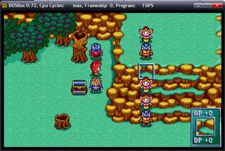
只要能有电脑在兰迪斯身边休息，索尔就被卡在上面的胡同里了～～
这里有个小问题：索尔MV6、兰迪斯MV4、狼人MV4，而这三个人的移动顺序是兰迪斯（我方）、索尔（友方）、狼人（敌方）；就是说如果按照图中的布局不动，等不到在狼人贴上兰迪斯的回合，狼人的位置索尔就能够到了。索尔会先狼人一步走出“胡同”秒杀狼人，布局失败！解决的方法是兰迪斯在狼人贴上的前一回合（正常15回合）走到大树的左边，这样索尔会走到兰迪斯的左边，正好够不到本回合末狼人的位置；下回合（正常16回合）兰迪斯走回图中位置，因为够不到狼人，索尔就会走回兰迪斯上而进入死胡同，等回合末狼人贴过来，索尔就再也出不去了。
此时兰迪斯LV8（DP52）可以让狼人（AP54）休息（也是前几回合集中经验给兰迪斯的原因），可狼人血少防低只有一个，非常不利于练级。而理想的练级目标是蛇魔女。
蛇魔女DP60，兰迪斯需要到LV10（DP62）才能扛住她，下来的这批电脑能提供1级多的经验，也就是说前几回合集中经验给兰迪斯后，最好能达到LV8.70左右，反击杀掉2蛇魔女2野战士就能到LV10，还能留下一个蛇魔女卡位练级（算的精细点儿能留下两个蛇魔女练级）。
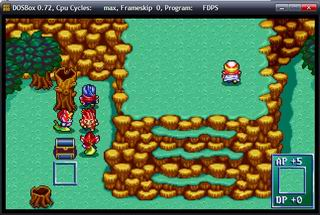
尤利安的任务就是去引魔导士。首先利用MV优势，在狼人蛇魔女靠近兰迪斯前从下面绕到楼梯右侧顺手拿了隐藏宝物（冰之珠）；然后上楼引下魔导士（最好能让魔导士贴着楼梯右侧走下来，这样魔导士就不会在台阶上冰索尔，利于走位），要注意的是现在尤利安的DP还不够让魔导士休息，且魔导士的MV和尤利安一样是4，所以千万不要让魔导士贴上尤利安，贴上就基本甩不掉了；耗光魔导士的MP后，兰迪斯杀掉一个蛇魔女（如果之前留下两个的话）给魔导士个位置，魔导士补位后就可以用他练级了。
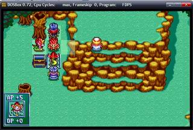
兰迪斯大概到LV12就不能练蛇魔女了，之后单练魔导士能到LV18。
尤利安则可以去欺负上面MV2的野战士了，原理是利用MV优势：靠近、反击、走开后电脑追不到，就会原地休息回血，这样尤利安可以通过一进一出得反击经验；练到LV14（DP73）就可以扛着野战士（AP74）慢慢拷打直到LV17；想到LV18就要提前引野战士到右侧箱子旁，不过一方面S/L最小伤害非常累，另一方面回合数也不是很够。
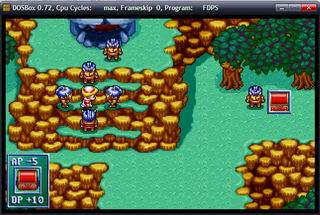
别忘了左侧树根的隐藏宝物（生命之实）。
章末：兰18.08 尤17.42
章末小结：本章充分利用了MV优势，野战士MV2、蛇魔女MV3，都是可以欺负的对象。兰迪斯是前期升级的重点，LV高也有利于后几章的布局；尤利安后期升级完全自立（封魔咒术、神之祝福），前期不用冲的太猛。
第三章：石巨神的封印
由于有回合限制，本章可说的不多。
总体思路整理如下：兰迪斯DP过高石巨神不攻击他，得不到反击经验，所以他的主要任务就是卡位留住索尔；亚克带着尤利安去找魔导士，亚克靠打魔导士反击石巨神获得经验（敌魔导士负责给石巨神加血），尤利安负责给亚克加血和拿箱子。
需要注意的细节是：亚克冲到魔导士身边的时机很重要，如果亚克等级够高（至少LV12）或者打魔导士的时候出现爆击，魔导士因为贫血会选择加血而不是烧亚克；否则亚克就要承受一次火烧外加三个石巨神的攻击――LV10满血基本能扛下来，同时下回合尤利安的治愈之风够不到的话，还要考虑亚克原地休息后HP>60（HP<60魔导士有可能选择火烧秒了亚克，而不是加血），当然如果看官选择吃回复剂就没有这个问题了。
本章最初的几个回合可以选择是否让亚克引出魔导士身边的四个石巨神，引出的好处是亚克升级快，坏处是石巨神容易堵住中间的狭长地带，卡索尔的时候有点儿麻烦；不引出的好处是可以迅速通过中间的狭长地带且用兰迪斯一个人卡住索尔，坏处是冲到魔导士身边的时候需要走位的很精细，因为只有一个位置可以让亚克冲到魔导士身边的同时引出这四个石巨神。两种路线的最终结果区别不大，亚克都能冲到LV14。
提供这两种思路的截图各一张，区别是卡索尔的方式略有不同。
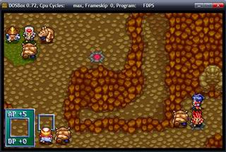
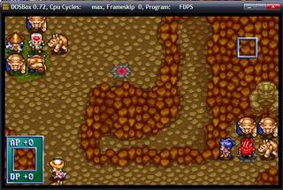
算好回合数拿魔导士身边的两个箱子（2500元和力量药水）。
还有中间兰迪斯下的红箱子（力量药水），如果之前忙于卡位没拿的话别忘了让兰迪斯拿。
章末：兰19.05 尤19.37 亚14.22
章末小结：算精细点儿尤利安能多升半级，具体方法是卸下防具和亚克一起得反击经验（要控制好石巨神的走位让魔导士都能加到血），不过对后几章的影响不大。
第四章：迷之女
非常打击积极性的一章，因为作为前期升级重点的兰迪斯居然100多回合没得到经验。
初期的重点是兰迪斯的走位，卡好左下角的援军可使兰迪斯升级非常快。
1：集体向右
2：第二回合如图布局
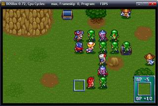
注意：本回合兰迪斯不要装防具，尤利安最好装备防具，这样图中亚克下方的骑士才会选择攻击兰迪斯而走到如图位置；否则亚克杀不到这个骑士，得不到战矛，影响之后的布局走位。
3：法落雷，亚杀下得战矛，兰杀右得巨剑，尤加血
4：法落雷，亚装战矛杀上2骑士，尤加血，兰左4
5：法打右，亚打上2，尤加血，兰左3下1装巨剑
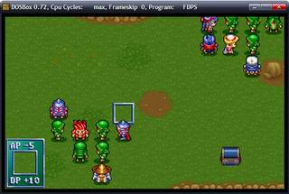
援军出现后就走成这样了。兰右面的骑士刚好在索尔的攻击范围外，索尔就不会动了。
从第6回合开始兰每回合休息，反击四个步兵（注意升级后换武器，别反击死了），魔导士会帮步兵加血。
耗光魔导士的魔后，兰迪斯装防具拷打的步兵至LV27（S/L最小伤害据说能到28，不过很累，不推荐），耗光魔法能到28，最后清场能到29（意义不大）。大概150+回合的时候兰迪斯就没办法得经验了，除非吃魔法草，而与其现在吃不如留着后几章吃，理由后述。
兰迪斯不能升级后就杀光身边的电脑去捡箱子，然后帮那三个布局卡位传东西。
兰迪斯一个人在左下升级，中间布局就只剩下三个人了，走位需要算的精细点儿：
1：开始的几个回合这三个人都扛不住步兵，要想办法让魔导士走到前排，这样反击死电脑补位后顶在前排的是魔导士，才可能保持住阵型不被索尔走过去。上面的魔导士不会动，也就是说要快速耗光右面的2个魔导士的魔法，所以最好能让右面的魔导士每回合都加血而不是火烧亚克（治愈之风-MP10，业火-MP7）。
2：尤利安右亚克上的步兵有点儿麻烦，没人给他加血的话很快就被尤利安反击死了（除非你舍弃尤里安的反击经验不给他装备武器），而且他是电脑中最后一个移动的，也就是说他死的回合没有电脑自动补位，需要玩家自己补。但他这个位置非常难补，单纯的亚克走上1步是不行的，因为索尔会走到图中亚克的位置，也就是那块石头的左边，这样下回合他就能从石头下面绕过去杀电脑，布局失败。
3：为了调整布局，亚克补位的同时要杀掉其左上也就是法莲娜右的步兵（战矛的重要性），这样尤利安上1补位同时能空出自己的位置，索尔走到图中尤利安的位置，就不存在从下面绕过去的问题了。
4：尤利安移动补位的回合是不能加血，而当时法莲娜的血量是扛不下两个冰暴术的，也就是说之前最好能先耗光冰魔导士的魔法。
综上所述比较理想的流程是这样的：
1：亚克不断攻击其右上的骑士，让右面的魔导士不断加血快速耗光魔法，同时尽量保障上面的魔导士不要加血消耗魔法。
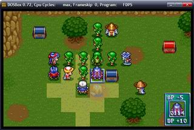
2：右面魔导士魔法耗光开始移动后，配合法莲娜的落雷术亚克杀死正上方2格的步兵，让魔导士补位到前排。
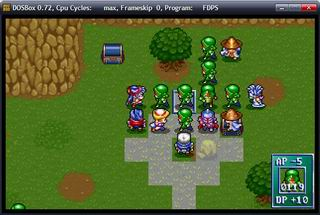
3：冰魔导士耗光魔法开始移动后，亚克杀死其右上的骑士（可能需要法莲娜的落雷术的配合），让冰魔导士补位到前排。
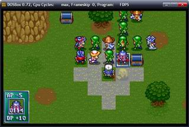
4：上面魔导士魔法耗光后2回合尤利安右的步兵被反击死，亚克（或法莲娜）杀死法莲娜右的步兵，尤利安补位，保持住阵型。
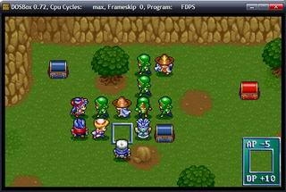
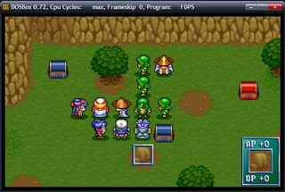
5：下回合亚克走开，法莲娜补位，开始拷打两个魔导士。
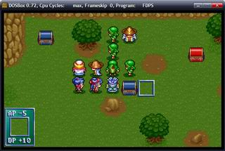
后面的升级就轻松愉快了：
亚克先利用MV优势（亚克MV6、步兵MV4）去欺负步兵，集体做法参照第二章。能扛住步兵后慢慢拷打，大概180回合的时候LV22秒杀步兵，就不能再升级了
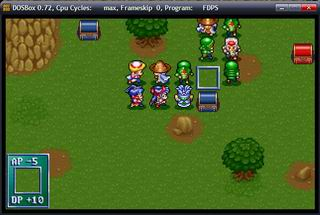
法莲娜先拷打两个魔导师升级。160回合左右让兰迪斯把尤利安的防具传给法莲娜。等亚克不能升级了就换法莲娜绕过去，穿法师长袍（DP+20）被步兵围住，换僧侣袍（DP+40）后慢慢拷打到255回合。法莲娜走后尤利安拷打两个魔导士，稍微升了点儿级。
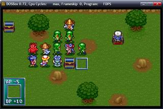
惯例提醒别漏箱子，不过这章闲人很多（150回合后的兰迪斯，180回合后的亚克），应该不会漏。
章末：兰28.56 尤23.49 亚22.01 法23.72
章末小结：作为前期的升级困难户，亚克和兰迪斯都升到了比较理想的等级，同时也暴露了他们升级的“瓶颈”。亚克暂不讨论，转职前不会魔法只能靠物理攻击升级，所以他必定要到第七章（甚至更晚）才能LV40；兰迪斯有魔法，物理攻击秒杀的时候用魔法慢慢磨也有经验，一般来说耗光本身带的MP能多升1级，再加上章末清场还能多1级，也就是说不用魔法草的情况下兰迪斯极限是第四章LV29、第五章LV33、第六章LV36。应该很难做到第四章LV40，就算魔法草够回合数也不一定够，而分歧就在于是第五章冲LV40还是第六章冲LV40。笔者更倾向于魔法草留到第六章冲LV40用，一方面第五章冲LV40要的魔法草非常多，战场上得到的肯定不够用，另一方面就算第五章冲到LV40转职，第六章一开始就秒杀所有电脑，还是要靠魔法升级，除非再用魔法草（甚至是爆魔法草），否则早一章转职不会有太多等级差距。法莲娜的等级稍微低了点儿，最后的100多回合走的不是很精细，对整体影响不大，因为她和尤利安一样，后期升级都爆快的。
第五章：疾风之帝国军
相当舒服的一章，因为前几章等级冲的够高，本章布局非常简单。
开始前分配好两个法师的防具，尤利安穿僧侣袍（DP+40）已经可以扛住电脑攻击最高的骑士（AP124）了；法莲娜穿法师长袍（DP+20）带封咒之杖（DP+5），前几回合靠加血再升2～3级也能扛住骑士了。亚克不卸防具DP131，而兰迪斯裸奔DP142（好恐怖的DP增长），完全无视电脑的物理攻击～～
开始的3弓3骑可以选择杀或不杀，关键看是否影响布局走位。骑士打不动法莲娜的时候会选择去戳木桩――索尔，从而不会影响走位；弓兵如果贴的很紧会很麻烦，需要就杀了。
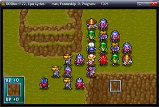
大家排排坐，挨业火～～
本章法莲娜是能冲40的，所以尽量把加血的经验给法莲娜。
兰迪斯和亚克打打面前的步兵，尤利安看时机加加血，总不至于没事做。
耗光魔导士的魔法，杀掉挡路的弓兵，亚克上楼走小道引右面的电脑，法莲娜顶他的位置拷打步兵。
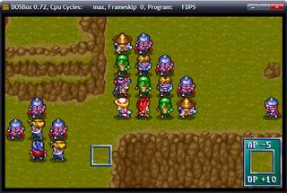
从上面来的3弓2魔需要亚克引一下，以保证下楼时弓兵不会妨碍魔导士的走位。
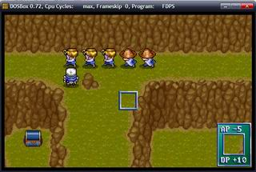
兰迪斯三人适当的后退，退出右面魔导士的魔法范围。
站好位置，继续挨业火～～
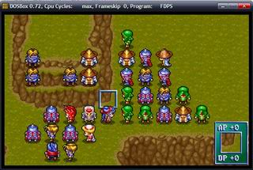
尤利安卸下防具可以引一个步兵下来给兰迪斯拷打。
耗光上面两个魔导士后，法莲娜开始魔法攻击右面的11个单位，用光自己的魔法。
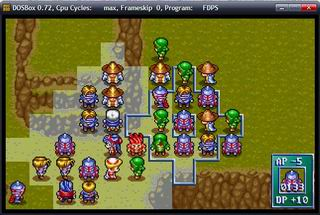
杀掉挡路的弓兵，法莲娜上楼走小路绕到电脑的后面，拷打2骑士2步兵可一直到LV40。
尤利安用封魔咒术耗光自己的魔法。
兰迪斯拷打2步兵。
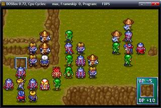
兰迪斯LV31秒杀步兵，换位亚克拷打步兵，兰迪斯站亚克的位置烧右侧5个单位。
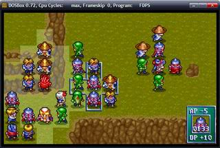
耗光魔法后兰迪斯LV32，再杀几个弓兵到LV33。
亚克LV25秒杀步兵，换位尤利安拷打步兵（杀个步兵走走位可以多拷打一个骑士）。
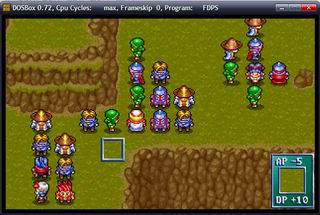
不要用法莲娜捡箱子，本章闲人一样很多，别耽误了她冲LV40。
章末：兰33.27 尤28.05 亚25.10 法40.00（转法师）
章末小结：开始没想让法莲娜冲LV40，后来发现不冲白不冲，免得法莲娜到了下章LV40后无事做，浪费大量回合，正所谓浪费就是最大的犯罪，还是本章冲了好。由于开始打的太随意，导致最后回合数不够，只好让法莲娜清场才在255回合勉强达到LV40。尤利安也因此少升了1级多，不过影响不大。用兰迪斯清场大概还能升到LV34，意义不大，因为他下一章冲LV40缺的是魔法，不是回合数。亚克算是升到了极限，还是比较满意的。
第六章：帝国军追击
本章的关键是兰迪斯冲LV40。
开局被索尔“硌硬”了一下。因为不用风精之羽，兰迪斯第一回合贴不上桥口的步兵，被索尔杀到1步兵2弓兵，看来兰迪斯第五章冲LV40转职还是有点儿用处的，至少MV+1就能卡住索尔减少浪费了。
本章的骑士和步兵都会主动攻击索尔，这点儿非常讨厌。
裸奔的亚克负责吸引骑士和步兵的火力，第一回合贴上步兵后慢慢后退把2骑2步引出索尔的攻击范围，布局好后就装上武器防具开始拷打两个步兵（似乎还是有一个骑士在索尔的攻击范围内，装战矛杀掉）。
另三个人配合索尔的走位挨魔导士的魔法砸，法莲娜负责加血。
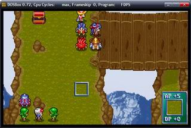
耗光魔导士的魔法后把它杀了（典型的卸磨杀驴），兰迪斯带着索尔往左上走走，尤利安卸载防具后把右面的电脑引过来，利用桥口布局卡住索尔，兰迪斯练两个兵士，法莲娜练一个骑士。
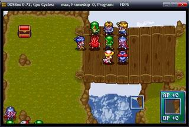
兰迪斯LV34的时候基本秒杀步兵（据说S/L最小伤害还是秒不了），要想再升级就要用魔法加清场了。
用兰迪斯清光中间的电脑，带着索尔在悬崖边上看日出～～
法莲娜和尤利安去打一打右面的电脑，耗光魔导士的魔法。
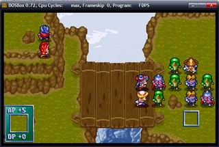
同时左面的亚克也快升到极限了，提前动一动随时准备轮转换位。
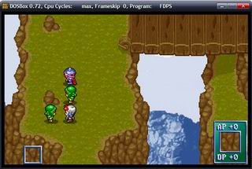
援军出现后索尔就不会跟着兰迪斯了，这点儿需要利用。
杀了右面的第一个骑士引发左下的援军（亚克要先移动，可别被援军包围了），法莲娜顶位拷打两个步兵至章末，兰迪斯顶尤利安的位堵住索尔，尤利安往回走接替亚克在桥头卡住电脑，亚克后退的同时卡卡电脑的走位，为尤利安争取时间。
尤利安和亚克擦身而过的时候卸载防具，反击步兵让魔导师加血，基本重复了兰迪斯第四章左下的故事。
亚克继续右行顶兰迪斯的位，解放兰迪斯去升级（如果之前亚克没升到极限LV28，现在可以继续练练右边的步兵）。
兰迪斯汇合尤利安魔法升级。
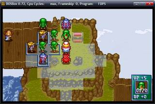
耗光魔导师的魔法后稍微走走位，不影响兰迪斯升级的前提下，尤利安可以拷打两个步兵了。
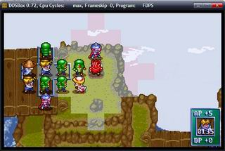
实践证明本章业火比狂暴巨焰升级效率高。
兰迪斯一次业火EX+10～11（LV35前11，LV36后10），清场杀一个骑士EX+6，杀其他都是EX+7。
算好冲LV40所需要的魔法后就可以吃魔法草、魔法水了。
魔法耗光后杀1骑1弓，尤利安就可以练3个步兵了（用封魔咒术耗光自己的魔法，别浪费了）。
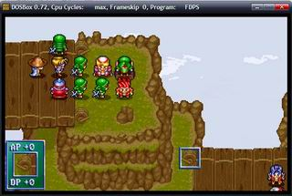
最后算好回合数清场，拿箱子，尤其别忘了最右面的蓝箱子（宽刃剑）。
章末：兰40.00（转剑圣） 尤36.01 亚28.36 法10.11
章末小结：兰迪斯冲LV40消耗了2个魔法草1个魔法水，原因是笔者从LV34开始用魔法升级。据说S/L最小伤害能用物理攻击到LV35，如果这样的话能节约2个魔法草而只消耗1个魔法水，但是S/L最小伤害非常累，不推荐。尤利安其实没必要升这么快，也就是说中期不需轮转换位那么麻烦，后期也无需走位练3步。法莲娜的魔法值浪费了，原打算物理攻击秒杀后再用魔法升级的，后来发现回合数不够，魔法应该之前就用掉的（比如耗右面魔导士魔法的时候）这样可能能多出1级吧，影响不大。
第七章：竞技场战士
本以为是目标明确的一章，却没了成最大的变数。
简单一句话就是：舍弃了本该冲LV40的亚克！！！
本章亚克几乎不得经验，尤利安用封魔咒术蹭一级，重点升级对象是兰迪斯和法莲娜。
利用裸奔的尤利安或亚克控制电脑走位，使佣兵包围法莲娜。兰迪斯绕上去和裘娜单挑～～
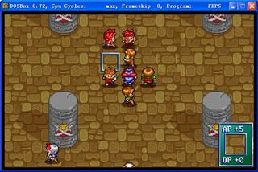
兰迪斯LV9后秒杀裘娜，改用魔法升级。法莲娜（LV23）休息，裘娜（MV4）可以留给亚克（MV6）欺负。
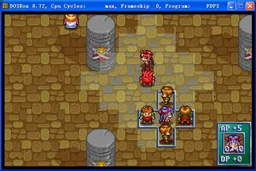
本章只有一个宝物（风精之羽），不要忘记拿。
章末：兰10.65 尤37.16 亚29.25 法23.15 裘15.00
章末小结：兰迪斯基本升到了极限，这对下一章很重要。尤利安升级已开始自立。法莲娜其实LV20左右就不影响今后布局，可以考虑把经验分给亚克，不过意义不大。舍弃亚克的理由要到第8章（甚至第10章）才能说清楚，请各位看官少安毋躁。
第八章：地底监狱
冲级的第一条分水岭，本章的布局直接影响第七章的选择。
关键是拷打第二批援军――AP460的骑兵，本章能做到这点的有两个人：兰迪斯（LV15）和法莲娜（LV26）。
兰迪斯的升级策略是这样的：利用地形（箱子AP-5,DP+10）物理攻击到LV12；耗光魔法（业火）到LV14；杀两个电脑到LV15；拷打骑兵（AP460）到255回合。
法莲娜的升级策略相对简单：利用魔法（麻痹术）到LV26；拷打骑兵（AP460）到255回合。
亚克和尤利安本章不着急冲LV40，看机会能升多少升多少。
裘娜作为新的升级困难户，目标自然是升级的极限（也要利用到箱子）。
大体流程是这样的：
迅速解决左上的电脑，法莲娜、尤利安、裘娜右移准备卡村民；亚克走下路拿箱子（左下的箱子可以留给兰迪斯拿）去右上与大部队汇合；兰迪斯到中间的箱子处等援军；援军出现后法莲娜（从亚克处拿到锯齿剑和符咒皮甲）到中间与兰迪斯汇合。至此分成两组升级。
兰迪斯被第一批援军――AP249的骑兵包围，可拷打至LV12后改业火；法莲娜使用麻痹术，每次5中4的话EX+20左右，很快就能到LV26；还有就是法莲娜左的灰色骑士可以杀掉，攻高血低没有练级价值。
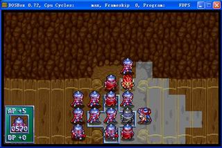
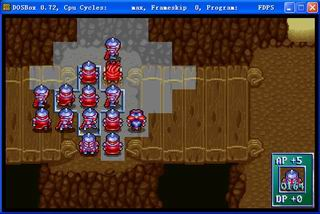
法莲娜魔法耗光后走位，拷打AP460的骑兵。兰迪斯魔法耗光后杀AP249的骑兵到LV15。法莲娜给兰迪斯锯齿剑和符咒皮甲，利用电脑骑兵攻击默认隔一格的特点走位。二人拷打至255回合。
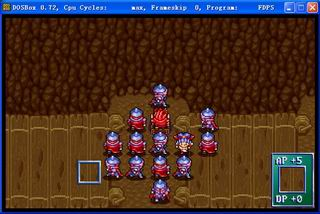
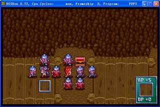
另一组的流程相对复杂。
卡住村民后等费塔加的魔法耗光，留下3兵1魔（亚克、尤利安各打一兵致残，费塔加冰弓后电脑魔导士会选择治愈之风加血）。裘娜利用反击升级――不断和尤利安换位置。
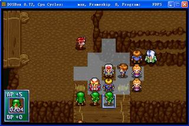
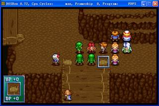
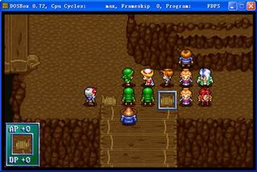
裘娜LV20能扛步兵，布局的关键就是把这3个步兵引到下面的箱子旁。原理是利用裸奔的亚克吸引火力，同时利用他的MV优势。
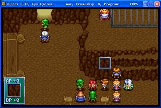
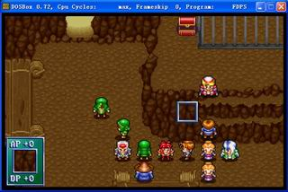
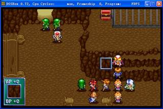
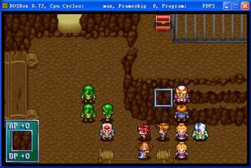
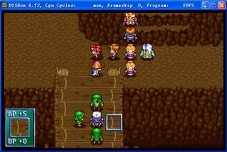
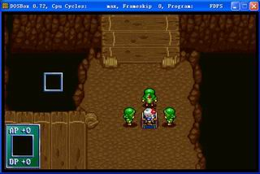
至此布局结算，尤利安顶裘娜位卡住村民，裘娜下亚克位拷打步兵至LV29（后换亚克拷打），亚克穿防具走开。
算好回合数后杀掉魔导士放走村民。右上的红箱子（生命之实）别忘了拿。
章末：兰31.29 尤38.50 亚35.34 法34.89 裘29.49 费15.00
章末小结：兰迪斯能扛第二批援军后升级的速度是飞快的（每回合EX+10），所以越早到LV15越有利，从而兰迪斯第七章需要升到极限LV10；法莲娜则是为了布局方便――总要有人给兰迪斯递东西吧，而递东西的这个人如果扛不了第二批援军也是跑不掉的啊（MV劣势），总不能让法莲娜150多回合站着不动让电脑砍吧？本章拿到第一个暗之徽章，本应该让尤利安冲LV40转职的，可考虑到另一个黑暗职业――布兰多升级的困难度，决定把这个暗之徽章留给布兰多，让尤利安用第14章的第二个暗之徽章转职，也就是说尤利安只要14章前LV40就可以――暂时无视他把～～裘娜这种只能靠物理攻击升级的角色很麻烦，自然是要升到极限。最后说亚克，亚克冲双40的关键是何时能转职后LV15――学会痊愈之泉，一般流程是第7章LV40转职，第10章练援军骑士至LV15（利用射程优势），后全用魔法升级至LV40。也就是说除非能在第8章或第9章把亚克练到LV15，否则亚克第7章转职或第9章转职区别就不大。这几章可利用的也只有第8章的第二批援军，要扛下这批援军亚克需要多少等级呢？LV15！恶性循环～～所以说第7章亚克可以不着急冲LV40转职，把经验留给更需要的人吧。
第九章：布兰多与盖亚
本章收到两个冲级的大累赘，今后的布局走位都要围绕他们展开了。
开始几回合布兰多和盖亚要独自面对右侧的1冰2佣2骑，笔者本想通过走位能做到不吃回复剂杀掉这些电脑――为了一个$60的回复剂的确很无聊，但在这种“无聊”中偶得了一种很精妙的布局――不光省下了一颗回复剂，连冰魔导士都可留下不杀了。
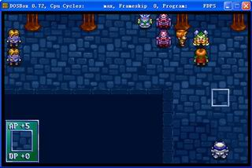
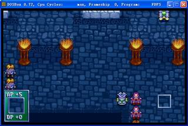
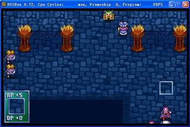
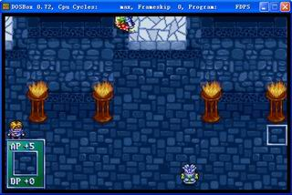
左侧这边首先是要用裸奔的亚克和裘娜引下一些电脑给裘娜升级（期间需要保护费塔加不被攻击到），其余人向上。
因为本章没有人需要得到加血经验，所以没必要排排坐来挨上面两个冰魔导士的魔法。相对而言支援右侧更重要――快速通过两个冰魔导士的身边。费塔加留下准备反击冰魔导士，法莲娜留下配合卡位；其余人迅速右移。
期间布兰多带冰魔导士“徘徊”，盖亚休息满血后贴近魔导士消耗其魔法（腐毒术似乎对机兵无效）。右下援军出现时候需要亚克和兰迪斯及时卡位，布局后让盖亚得反击经验（参考第8章裘娜），布兰多飞到中间在尤利安的配合下练2佣1骑。
费塔加把三个魔导士引到一起慢慢反击。
裘娜极限（LV32）后替换亚克到左下拷打骑兵至LV40。盖亚LV25后可以拷打暗黑骑兵，用尤利安（换防具）引暗黑骑兵将盖亚围住。
同时引冰魔导士把费塔加围住，其他电脑留给布兰多升级。
盖亚极限LV32后，引暗黑骑兵给布兰多练。利用布兰多的射程优势，每回合主动的同时可得反击经验，章末可LV40。
三个柱子下的隐藏宝物别忘了拿。
章末：兰31.65 尤40.00 亚40.00（转圣骑士） 法35.71 裘32.15 费37.22 布40.00（用暗之徽章转机械大师） 盖32.55
章末小结：重点照顾对象都升到了极限是件好事儿，尤其是布兰多能LV40转职对后几章将非常有利。费塔加的魔法没用上，用好了应该也能LV40转职，就能更早学会神行术，好在对整体的影响不大，假装无视掉吧。
第十章：宗教法庭
冲级的第二条分水岭，说实话打的不是很好。
裸奔的布兰多引上两个骑兵，卡好位后开始拷打。费塔加随便拷打几个到LV40。兰迪斯和法莲娜站好位卡住LV40骑士，亚克利用射程优势升级（参考第九章布兰多）。
下方骑士最大承受攻击390（注意地形），各角色可练极限等级：亚克LV3、裘娜LV34、布兰多LV3（空军似乎不受地形影响，否则能到LV5）、盖亚LV33。这些角色想再升级就需要反击LV40骑士了（亚克和布兰多可以“隔山打牛”），法莲娜、尤利安（甚至LV15后的亚克）的魔法值需留下给他们加血，之前能不用就不要用。
费塔加LV40后下来卡位，布兰多把LV40武士引到一旁“单聊”至255回合。
亚克LV15可以抗LV40骑士，换下兰迪斯去下面烧电脑（狂暴巨焰）。
裘娜LV38左右开始清场至LV40，留盖亚自己升级。算好回合杀光电脑，冲到最下一行。
本章有两个隐藏宝物。开始不着急拿，最后闲人很多。
章末：兰38.26 尤40.00 亚28.54 法40.00 裘40.00（转狂战士） 费40.00（用光之徽章转法师） 布10.45 盖42.49
章末小结：笔者承认自己魄力不够，本章打的不够大气。兰迪斯不应该和裘娜、盖亚抢物理攻击的位置，单用魔法能到LV34，不影响整体冲级。亚克也不用冲级太快，本章能到LV15就成，应一直打后排LV40骑士把前排留给裘娜、盖亚。费塔加第九章LV40转职本章应该能会“神行术”了，而且有“痊愈之泉”能减轻法莲娜、尤利安加血的压力。布兰多升级效率不好，吃几个“力量药水”可能会更好。这样算来盖亚本章应该能到LV50以上。
第十一章：琴琴参见
没几个人能升级的一章。
本章所有的加血经验都给亚克；琴琴先反击魔导士，后拷打野武士至LV35；费塔加随便打打冲级很悠闲；兰迪斯找机会烧烧电脑；最后盖亚布兰多清场。
开始的几回合别忘了找人去抢左上的圣光之矛（不要用布兰多）。
章末：兰40.00 尤40.00 亚33.51 法40.00 裘1.30 费13.34 布11.37 盖45.18 琴35.12
章末小结：很无聊的一章。
第十二章：众神的兵器
裘娜、琴琴、盖亚全力冲级啊！
为了高能量炮选雷德。加血经验给亚克；裘娜、琴琴、盖亚轮流拷打至255回合。
隐藏宝物速度药水别忘了让布兰多去拿。
章末：兰40.00 尤40.00 亚39.68 法40.00 裘21.30 费13.34 布11.37 盖48.67 琴40.00（转武神）
章末小结：琴琴LV40后，拷打的经验是给裘娜还是盖亚值得讨论，笔者认为区别不大。
第十三章：地狱三斗神
裘娜、琴琴、盖亚继续冲级啊！
本章加血经验给亚克和费塔加；裘娜、琴琴、盖亚迅速接近三斗神开始拷打；尤利安就别上了，在后方休息吧；费塔加拷打暗黑骑兵；布兰多拷打右上的骑士到LV12。
裘娜、琴琴LV38左右开始清场，先杀一个让电脑移动包围费塔加，便于他拷打极限后用裂地术升级；三斗神都留给盖亚拷打。
右上石碑下的魔力水晶别忘了拿。
章末：兰40.00 尤40.00 亚40.00 法40.00 裘40.00 费29.96 布15.34 盖86.56 琴40.00
章末小结：升级策略有问题，应该先照顾盖亚的等级，估计第十章打的细致点儿这章能到LV95+。
第十四章：天空之骑士
开始盖亚漫长的清场升级生涯。
照顾好尤利安别被飞兵杀了，把电脑团在一起给费塔加裂地术。费塔加LV40后盖亚清场
开始的几回合别忘了找人去抢左上的暗之徽章（不要用布兰多）。
章末：兰40.00 尤40.00（用暗之徽章转大祭司） 亚40.00 法40.00 裘40.00 费40.00 布15.34 盖88.93 琴40.00
章末小结：这么算来舍弃第二个暗之徽章（尤利安第九章LV40转大祭司、布兰多转机械伯爵），本章末达到当前全员满级还是有可能的。还有就是章末别忘了买力量药水，按照裂地术目前最高卖价：49151，一共可买44个力量药水。由于战线拖的太长，笔者没有逐章核实金钱最大值，不过估计很难买到第45个力量药水。
第十五章：要塞炮危机
舍弃妖刀还有一个好处：布兰多可以拷打要塞炮。
费塔加帮玛丽安卡位，配合神行术冲级；尤利安先拷打野蛮战士后用神之祝福；布兰多拷打要塞炮至255回合。
要塞炮右正对的红色箱子要最后一回合拿，还有两个隐藏宝物别忘了。
章末：兰40.00 尤22.02 亚40.00 法40.00 裘40.00 费40.00 布32.81 盖91.77 琴40.00 玛40.00（用光之徽章转神射手）
章末小结：高估要塞炮的回复能力了，原本估计能把布兰多送到LV40的，力量药水章末都给布兰多吃了吧，自此布兰多也进入漫长的清场升级生涯。
第十六章：罗特帝亚突入
第十七章：人质之危机
第十八章：咆哮之狮王
三连章一起说吧。
需要升级的有四个人：
尤利安：第十六章连拷打带神之祝福到LV32；第十八章到LV40。
布兰多：第十六章清场。
盖亚：第十七、十八章清场。
玛丽安：第十七章拷打武士至LV17，加血后LV18；第十八章加血至LV26。
第十六章别忘了去拿金属矿；第十七章别忘了去抢强化套件；还有第十八章的耐力药水和皇家圣弓。
章末：兰40.00 尤40.00 亚40.00 法40.00 裘40.00 费40.00 布35.99 盖97.03 琴40.00 玛26.32
章末小结：没想到玛丽安也成了冲级的羁绊，原以为能加血后升级很快，没注意第十八章只有两个魔导士。自此“放弃妖刀挑战17～18章的当前全员双40”宣告失败。
第十九章：蛇口之道
暂时把会奔雷弹的兰斯洛特叫做雷斯洛特吧。
图为雷斯洛特加入时的裸奔数据。兰斯洛特（加入时LV2：AP240）LV15：AP448，比图中AP370高78，按照圣骑士的成长AP+16相当于LV4。也就是第二十章的野蛮战士对兰斯洛特的极限为LV28，对雷斯洛特的极限是LV32。加上雷斯洛特能用奔雷弹升级，第二十章就能LV40。
其实练到这个级别5回合清场没什么难度，用盖亚的轰神炮、玛丽安的流星箭配合费塔加的神行术清场，用亚克、布兰多、琴琴的灵弹超必杀、法莲娜和尤利安的圣光柱扫边，唯一要小心的是电脑魔导士的咒杀术，好在命中率不高。
箱子是必然拿不全了，唯一必须拿的是右侧红色箱子里的魔力水晶，其他就算了吧。
章末：兰40.00 尤40.00 亚40.00 法40.00 裘40.00 费40.00 布36.22 盖98.39 琴40.00 玛27.44 雷15.00
章末小结：由于快速清场，经验无法集中，裘娜、琴琴都能得到经验。也就是说她们第十三章没必要LV40，LV39.50左右就成，应该把经验让给盖亚。
第二十章：谜走之隧道
这章的准备工作很重要。
玛丽安升级基本靠加血，电脑有八个魔导士，每个魔导士能放八个冰魔超速弹，如果冰魔超速弹能5个人全中，相应的加血经验约EX20。总共算下约EX130，正好LV40。所以本章布局的重点是保证电脑每个冰魔超速弹都能打中我方5人，同时算好魔法需求，买魔法水。
雷斯洛特虽然能放魔法了，但没有魔法值，需要吃魔力水晶。之前共能得到5个魔力水晶，如果第十四章为了换力量药水会卖掉3个，剩下2个吃下MPmax+30，吃一次魔法草可放两个奔雷弹，一次奔雷弹全中EX+20，算好需求买魔法草。
章末：全满～～
章末小结：原本以为最后的冲刺会很艰难，没想到150回合就达到了，还有10多个电脑没清场，经验浪费了。
第二十一章：地底神殿
别忘了用布兰多去拿神光之矛。
第二十二章：巫汤婆婆
别忘了用法莲娜打倒巫汤婆婆得死神契约。
第二十三章：死神冥河
别忘了用法莲娜打倒死神得反禁制器，还有琴琴的形见指环。
第二十四章：魔精石之秘密
别忘了用布兰多去拿魔精石碎片和高能量装置，还有把新加入的珊练满级。
第二十五章：魔战将军
别忘了用玛丽安去拿风神弓。
第二十六章：狂信人之塔
第二十七章：魔导士之野望
第二十八章：异界之封印
第二十九章：守护魔龙
第三十章：最终之圣战
没啥难度的五练章，该拿的东西都拿好，第二十六章别忘了给裘娜买把刀（不过最后一章直到第三个平衡之神死，裘娜只碰到平衡之神一下――验证了开篇的判断：力量药水给布兰多作用更大）。
最后总结一下整体挑战思路：
放弃亚克第七章LV40转职――更充分的利用第八章第二批援军；
交换暗之徽章的使用顺序――让布兰多能更早的转职冲级；
放弃妖刀――让玛丽安能更早的转职冲级；
收雷斯洛特――为第二十章的满级留下可能。
这正是：
面壁三载不觉累，
望穿瓶颈叹徒劳。
藏徽埋刀销神箭，
匹马奔雷听大潮。 |